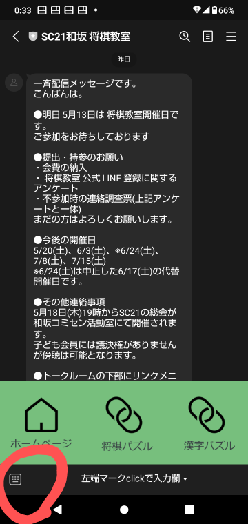
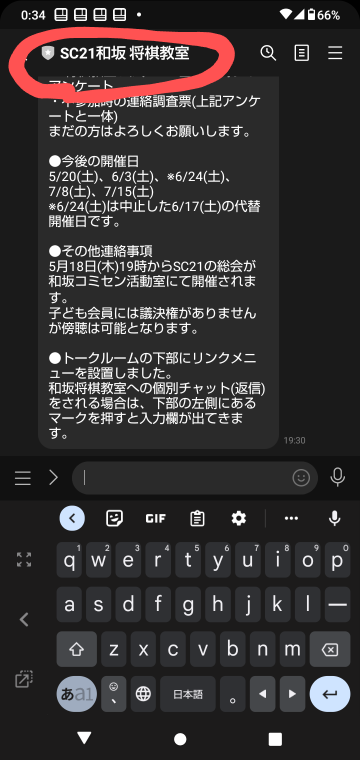
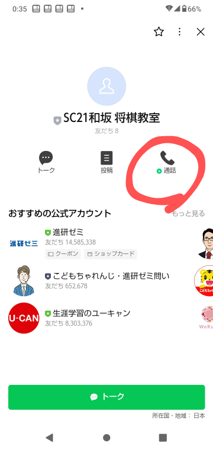

和坂将棋興津の公式LINEについて
和坂将棋教室の公式LINEについて
- 登録(友達追加)用QRコード(詳細クリック)
- QRコードは入会された方のみに案内させていただいています。
- 公式LINEの利用が無料の場合、配信数×人数で制限が200(個別チャット数は含まない)となるため、登録者が多くなると無料使用が難しくなってきます。
- 登録用のQRコードはなるべく実際の将棋教室参加者以外の方の目に触れる機会が少ないようにします。
- 将棋教室を退会された場合は、LINEで『SC21和坂 将棋教室』をブロックまたは削除をお願いします。
- 当面は無料枠に余裕がありますので、退会されてもそのまま将棋教室の案内を受信していただくことも可能です。
- 匿名状態での登録(詳細クリック)
- 登録者は他の登録者のことはわかりませんので友達招待が届くことはありません。
- 登録しただけでは公式側では登録者が増えたということしか把握できません。
- 登録しただけではSC21和坂将棋教室公式との個別チャットは開通しません。
- 個別チャットが開通すると登録者のニックネームがSC21和坂将棋教室公式でわかるようになります。
- 将棋教室との連絡をLINEで行いたい場合は個別チャットを利用しますので、匿名状態ではなくなります。
- 一斉配信メッセージの受け取りのみとなります。
- 個別チャットの利用(詳細クリック)
- 将棋教室への不参加などの個別連絡に使用していただけます。
- 個別登録しただけではSC21和坂将棋教室公式との個別チャットは開通しません
- 登録しただけではSC21和坂将棋教室公式との個別チャットは開通しません
- 登録者側から返信することで初めて個別チャットが可能となります
- 登録者側から返信する方法については横スワイプをして"個別チャットの利用方法"をご覧ください。
- 一度チャットが行われると公式側からいつでもチャットが可能になります
- チャット相手の登録者のニックネームはわかりますが本名はわかりません
- 初めて連絡される場合にニックネームが本名でない方は名乗っていただきますようお願いします
- 登録者全員への一斉配信の場合は、なるべく冒頭に「一斉配信」等の文言を入れます
- 公式の管理者が二人いますのでチャット応答の重複等ある場合が考えられます。ご容赦ください。
- 個別チャットの利用方法 (詳細クリック)
- 通常のLINE使用と同様に入力欄に入力して送信することになります。
- 入力欄がでていない場合には、以下の画像の赤丸部分のキーボードアイコンをタップすれば入力欄が現れます。

- LINE電話の利用(詳細クリック)
- LINE電話を登録者から公式へのみかけることができます
- LINE電話を公式側から登録者へはかけることはできません
- LINE電話の利用方法については"LINE電話の利用方法"をご覧ください。
- LINE電話の利用方法 (詳細クリック)
- 電話のマークを探すことになりますが、公式のLINEでは個別チャットのトークルームには電話マークはありません。
- トークルームの上部の"sc21和坂将棋教室"の文字をタップすることで出てくる画面に電話マークがあります。


- 紙媒体の配布(詳細クリック)
- 全会員にLINEと紙媒体で同様な内容を案内する場合には紙媒体不要の方には紙媒体の配布は行いません
- LINE配信では個人名、個人電話番号の記載をしないほか、挨拶の省略等の違いはあります
- 緊急連絡はLINEのみ、アンケートなどは紙媒体のみとなります。
- SC21和坂 将棋教室退会時のLINEの取り扱いについて(詳細クリック)
- 現在の所、公式LINEから一斉配信を公式LINE登録者の中から退会された方を除いて一斉配信するという対応は完全にはできません。
- 将棋教室を退会された場合は、LINEで『SC21和坂 将棋教室』をブロックまたは削除をお願いします。
- このようなお願いをするのは、公式LINEの一斉配信の無料配信枠に制限があるためです。
- 無料配信枠については"LINE公式の無料配信枠について"をご覧ください。
- 当面は無料枠に余裕がありますので、退会されてもそのまま将棋教室の案内を受信していただくことも可能です。
- LINE公式の無料配信枠について(詳細クリック)
- LINE公式の一斉配信は月毎に無料一斉配信枠があります。
- 無料配信枠は200です。
- 計算方法は毎回の(配信数)×(配信者数)の合計です。
- 個別チャットでのやりとりの数はカウントされません。
- 現在の将棋教室の参加者の規模では退会者にも配信をしていても無料枠は当面気にならないと思います。